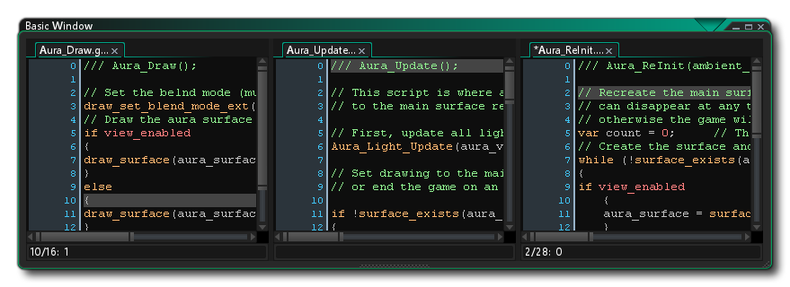

Puede usar código en varios lugares dentro de GameMaker Studio 2 desde objetos, a salas, a instancias, y hay una serie de funciones integradas que le hacen la vida más fácil cuando programa con GML o Arrastrar y soltar. Sin embargo, a menudo es necesario que cree sus propias funciones para realizar una tarea específica, o para condensar una gran sección de código en un fragmento más manejable, o incluso para poder reutilizar un bloque de código en particular en muchos lugares diferentes, razón por la cual GameMaker Studio 2 le brinda la posibilidad de crear scripts.
NOTA: Si bien esta sección trata con scripts, la ventana de código en la que escribe sus scripts es la misma que para Eventos, código de creación de sala o instancia o Shaders, y la funcionalidad que se describe aquí se aplica a todos ellos.NOTA: Esta página hace referencia a GML para escribir scripts, pero también puede crear scripts usando Arrastrar y soltar (ver aquí ). No importa lo que use para codificar su proyecto, la información en esta página aún es válida para el editor.
Los scripts se escriben utilizando el lenguaje de scripts GML (consulte la sección Descripción general de GML para obtener más información), que es el lenguaje de programación integrado que usa GameMaker Studio 2. Una vez que te familiarices con GameMaker Studio 2 y quieras usarlo en toda su extensión, es aconsejable comenzar a aprender a usar este idioma, ya que amplía enormemente tus posibilidades al crear juegos. También puede escribir scripts usando Arrastrar y soltar, pero eso requiere un editor diferente y se trata en la sección del manual de scripts de acción.
Un script (como cualquier función incorporada) puede tomar diferentes variables de entrada, con real, string, boolean y valores especiales como all o noone ser aceptado, y estas variables de entrada generalmente se llaman argumentos, aunque a menudo también se los denomina parámetros. Para ejecutar un script desde un objeto o una línea de tiempo, use el nombre del script como si fuera una función o usando la función GML script_execute. Puede asignarle un nombre haciendo clic con el botón derecho  en el árbol de recursos y seleccionando Cambiar nombre, pero tenga en cuenta que el nombre del guión debe ajustarse a las reglas de guiones para las funciones, por lo que debe comenzar con una letra y solo contener letras, números o el símbolo "_" debajo de la barra.
en el árbol de recursos y seleccionando Cambiar nombre, pero tenga en cuenta que el nombre del guión debe ajustarse a las reglas de guiones para las funciones, por lo que debe comenzar con una letra y solo contener letras, números o el símbolo "_" debajo de la barra.
Como se mencionó anteriormente, puede pasar una cantidad de argumentos a un script (16 en total), y los usará para realizar la tarea para la que lo ha escrito. Para comprender esto mejor, tome, por ejemplo, una acción (o un código en GML) y piense en cómo funciona... lo coloca en un evento y especifica una serie de parámetros y hará que su instancia haga algo. Los scripts son exactamente lo mismo, con la única diferencia de que las escribe. No solo puede pasar argumentos a un script, sino que también puede pedirle a un script que devuelva un valor (usando el return palabra clave), por lo que puede usarlos para construir métodos de cálculo (métodos matemáticos) o devolver una identificación de instancia después de una detección de colisión compleja o cualquier cantidad de cosas. Sin embargo, tenga en cuenta que el uso de retorno finaliza el script, por lo que no se ejecutará ningún código después de que se haya utilizado, lo que significa que debe tenerse en cuenta cómo se estructuran los scripts.
Cuando crea un recurso por primera vez, se abre la ventana del editor de scripts con las siguientes opciones:
El editor de scripts se abre en una ventana con pestañas en la parte superior para que pueda tener varias secuencias de comandos en una ventana (aunque este comportamiento se puede cambiar desde las Preferencias para dar una nueva ventana a cada secuencia de comandos). Puedes hacer clic
en un script y luego arrástrelo para volver a ordenar las pestañas, o si lo prefiere, puede sacarlo de la ventana actual y colocarlo en el área de trabajo para crear una nueva ventana para ese script (o agregarlo a una ventana diferente) ), y también puede maximizar el editor de scripts para crear un nuevo espacio de trabajo también. Si arrastra una pestaña de secuencia de comandos fuera de la ventana IDE, se generará un nuevo IDE para contener este recurso de secuencia de comandos, y se puede usar como lo haría con la ventana principal.
Tenga en cuenta que si está editando código de un evento de objeto en el editor de scripts y ha maximizado el editor de scripts o lo tiene en una ventana o área de trabajo separada, haga clic con el botón derecho
El menú del editor tendrá algunas opciones adicionales:
- Restaurar al área de trabajo: esto sacará al editor de scripts de un estado maximizado / de área de trabajo y lo encadenará de nuevo al objeto en el área de trabajo.
- Ir a objeto: Esto lo llevará al área de trabajo donde está el objeto con el código y se enfoca en el objeto.
- Agregar / Abrir evento: Esto le permite agregar un nuevo evento al objeto al que pertenece el script actual, y abrirá una nueva pestaña de código en el Editor de scripts para el evento agregado. Si el evento seleccionado ya tiene código, se abrirá en una nueva pestaña.
Para obtener información sobre el resto del clic derecho
The Gutter se usa para mostrar los números de línea para su código y también para transmitir algunas piezas específicas de información. Lo que es más importante, si comete errores o construye el código incorrectamente, GameMaker Studio 2 IDE le informará del problema marcando la línea de código que está causando el problema con un signo de exclamación rojo.
. A continuación, puede pasar el mouse sobre el símbolo para obtener una breve descripción de cuál es el problema:
The gutter también marcará cualquier línea del script que tenga un punto de interrupción agregado. Un punto de interrupción es simplemente un lugar en el guión en el que desea que el módulo de depuración pause la ejecución de su juego cuando se alcanza. Puede alternar un punto de interrupción desde cualquier línea de cualquier secuencia de comandos o evento de objeto presionando " f9 " o haciendo clic con el botón derecho
Finalmente, el canal también mostrará los elementos marcados también. Para marcar una línea de código, simplemente mantén presionada
/
+
+ Número (de 0 a 9), y esto le permitirá saltar a esta línea de código desde cualquier lugar en el IDE simplemente usando
Mientras trabajas en el editor de scripts, puedes presionar
Aquí puede realizar una búsqueda local de la palabra clave ingresada y una vez que haya ingresado su término de búsqueda, puede usar las flechas en la esquina superior derecha de la ventana de búsqueda para saltar de un término encontrado al siguiente en el guión. Puede cambiar la forma en que se realiza la operación de búsqueda al alternar entre los siguientes botones:
Solo palabra completa: Al alternar esto, la función de búsqueda solo resaltará aquellas cadenas que coinciden con toda la cadena de entrada. Por ejemplo, la que fuera una búsqueda de "aleatorio" se mostrarán todas las palabras que contienen esta cadena - como irandom(), o randomise() - alternar mientras que solamente mostraría la función random(). Mayúsculas y minúsculas: cuando esta opción está activada, le está diciendo a GameMaker Studio 2 que verifique no solo el contenido de la cadena de búsqueda, sino también el caso. Por ejemplo, si usted tiene un sprite llamado "spr_Dog" y hace una búsqueda de "perro" con esta alternar fuera, entonces la cadena de sprites se pondrá de relieve, sin embargo, si el conmutador está en entonces no será ya que "perro" no es más tiempo considerado lo mismo que "perro". Si ha abierto la ventana de búsqueda usando
Para abrirlo. Una vez abierto, puede ingresar una cadena que se usará para reemplazar cualquier cadena de búsqueda dada, utilizando los siguientes botones para realizar la acción:
Reemplazar siguiente: Al hacer clic en este, se reemplazará la siguiente cadena de búsqueda encontrada en el script con la cadena de reemplazo dada. Tenga en cuenta que el término "siguiente" se considera el siguiente después de la posición actual del cursor, y puede saltarse a los diferentes usando los botones de flecha en la parte superior derecha de la ventana de búsqueda. Reemplazar todo: Al hacer clic en este, se reemplazarán todos los ejemplos de la cadena de búsqueda dentro del script usando la cadena de reemplazo dada. Tenga en cuenta que si desea hacer una búsqueda global (es decir, buscar todo el proyecto en lugar de la secuencia de comandos actual), puede presionar
El editor de scripts principal es donde escribirás todo tu código para crear el script o completar un evento de objeto. Los scripts y los eventos de código se escriben siguiendo las reglas generales para la sintaxis GML (consulte la sección Descripción general de GML para obtener más detalles), y puede obtener ayuda al escribir sus scripts desde la ventana de autocompletar:
Esta ventana aparecerá cuando está escribiendo su código (normalmente después de una pequeña pausa, pero esto se puede configurar en las Preferencias ) y le dará una selección de las respuestas "mejor ajustadas" en orden alfabético. Mientras usa el editor de código, puede hacer clic
luego click
Vale la pena señalar que puede comentar su código de varias maneras. Comentar su código es muy importante para mantener la productividad, ya que mantiene las cosas claras y separa las secciones de código de tal manera que es obvio lo que hace cada parte y por qué está allí. También significa que si trabaja en equipo, puede dejar notas para otros miembros y saber exactamente qué ha hecho o para qué sirve una sección específica del código. Incluso si eres un desarrollador solo, dejar comentarios para tu código es importante, especialmente si tienes que abandonar el proyecto y volver a él en una fecha posterior.
Comentar su código es simple, ya que solo tiene que usar " // "antes de cualquier línea de texto o puede comentar párrafos completos usando" /* text here */ ".Hay incluso dos métodos abreviados de teclado para comentar y descomentar líneas seleccionadas de código:
Los scripts también pueden tener ciertos comentarios de estilo JSDoc agregados para que cuando los use en su código se muestren en autocompletado junto con sus argumentos y otros detalles. Puede obtener más información sobre esto de la sección Comentarios de JSDoc Script para obtener más información. Es importante tener en cuenta que los comentarios del script pueden formatearse y analizarse en la Lista de tareas para que los elementos se puedan agregar a la lista automáticamente (para más información, consulte aquí ).
Además de los comentarios, también puedes usar especiales #region etiquetas para marcar una sección de código para Código Plegable. Cómo funciona esto es que agregas un #region etiqueta (junto con cualquier texto de comentario) a la parte superior de una sección de código y luego agrega una correspondiente #endregion marque en la parte inferior de la sección y luego puede "doblar" el código, es decir, ocultarlo para que pueda reducir el número de líneas de código visibles en el editor en cualquier momento:
El código real se ve más o menos así:
#region This is an example region
width = sprite_get_width(sprite);
height = sprite_get_height(sprite);
xoff = sprite_get_xoffset(sprite);
yoff = sprite_get_yoffset(sprite);
#endregion Further comment here if requiredComo habrás notado, algunas partes del texto del script están coloreadas. El editor de secuencia de comandos "sabe" sobre los objetos existentes, las variables y funciones integradas, etc. y los codifica con colores en consecuencia. La codificación por colores ayuda mucho a evitar errores, como puede ver inmediatamente si ha escrito mal algún nombre o usa una palabra clave como variable o tiene un error de sintaxis. Sin embargo, si no le gusta el código de color, en las Preferencias puede activarlo y desactivarlo (también puede usar F10) y personalizar los colores que se usan.
Puede hacer clic derecho
Además de las funciones normales que espera cortar, copiar y pegar líneas de código, también tiene la opción de comentar o descomentar cualquier texto seleccionado, agregar o quitar sangrías, así como dividir la ventana de código en 1, 2 o 3 paneles separados (tenga en cuenta que las opciones relacionadas con #regions no estará disponible si no ha definido ninguno en el código que se está editando). Estas últimas opciones dividirán la ventana en diferentes partes donde puede arrastrar un script y hacer que se muestre junto con los otros para comparar y editar. 
Esto es excepcionalmente útil para comparar dos scripts o para visualizar scripts conectados al mismo tiempo, sin necesidad de otra ventana o tener que cambiar constantemente entre pestañas. Las otras opciones en este menú son para alternar un punto de interrupción para usar con el depurador y para convertir el código GML en DnD ™ o viceversa. Tenga en cuenta que si convierte el código a DnD ™, no creará acciones individuales para cada línea de código, sino que usará una sola acción de código para contener todo lo que estaba previamente en el evento o secuencia de comandos.
Otra herramienta muy útil que tiene a su disposición cuando edita sus scripts es el uso de fragmentos de código. Presionando F4 abrirá el fragmento de código emergente, que le permite seleccionar uno de los métodos de código comúnmente utilizados. También puede definir sus propios fragmentos de código si lo desea, y guardarlos en el directorio donde instaló GameMaker Studio 2 en la siguiente ubicación: \GameMaker Studio 2\TextEditor\snippets.txt. Puede editar este archivo con cualquier editor de texto siguiendo estas reglas:
- Cada fragmento está en una línea separada (no debe haber líneas en blanco).
- Cada fragmento comienza con el nombre del fragmento (que es lo que se muestra en el menú) seguido de los dos puntos (:) seguido del fragmento de código real.
- Use # para una línea nueva y coloque primero el texto que debe seleccionarse entre | símbolos.
Consulte los ejemplos que ya están en el archivo para ver cómo se configura siguiendo las reglas anteriores, y se recomienda encarecidamente que haga una copia de seguridad antes de comenzar a cambiar cualquier cosa, y también haga una copia de seguridad de las ediciones que realice en el archivo, como debe volver a instalar el programa o actualizarlo, revertir los cambios que realice, puede usar la copia de seguridad para volver a hacerlos.
La barra de información en la parte inferior del IDE muestra el número de línea actual en el que se encuentra y la posición a lo largo de la línea. También es donde puede ver el código auxiliar, que es una línea de texto que muestra la función que está editando actualmente junto con los argumentos que requiere. A medida que completa la función en el editor, los argumentos se resaltarán para mostrarle cuál está editando actualmente. Si ha utilizado los Comentarios del script JSDoc dentro de un script personalizado, la información que ha proporcionado también se mostrará aquí.